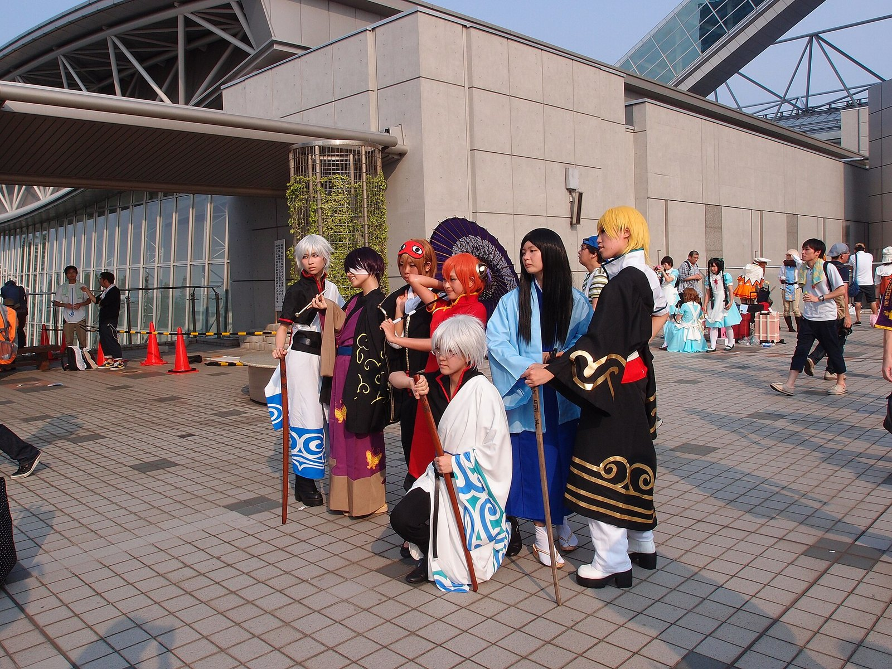

动漫：银魂，万事屋
银魂里我最喜欢的就是万事屋这三个人。银时平时懒得很，爱吃甜的，看 JUMP，还随身带把木刀，但真出事的时候他比谁都靠得住。
新八基本就是个吐槽的眼镜，负责把另外两个人拉回正常；神乐是夜兔族，力气大得离谱，爱吃醋昆布，说话还带点口音。
这动画很神奇，前一秒还在乱开玩笑、恶搞别的作品，后一秒就能把人看得鼻子一酸。看着看着就习惯了。
说明一下：动画截图有版权，所以这一页放的是漫展上拍的 Cosplay 照片，正好是银时和神乐。


银魂里我最喜欢的就是万事屋这三个人。银时平时懒得很，爱吃甜的，看 JUMP，还随身带把木刀，但真出事的时候他比谁都靠得住。
新八基本就是个吐槽的眼镜，负责把另外两个人拉回正常；神乐是夜兔族，力气大得离谱，爱吃醋昆布，说话还带点口音。
这动画很神奇，前一秒还在乱开玩笑、恶搞别的作品，后一秒就能把人看得鼻子一酸。看着看着就习惯了。
说明一下：动画截图有版权，所以这一页放的是漫展上拍的 Cosplay 照片，正好是银时和神乐。
